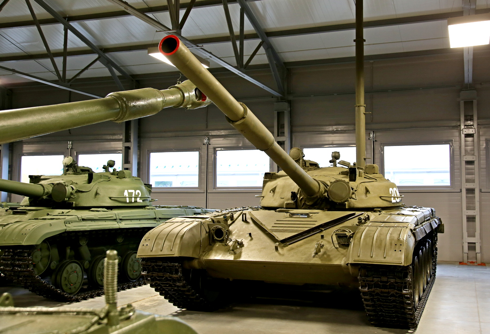
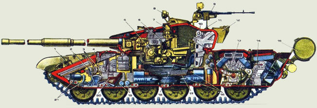

 
оссийский танк Т-90 предназначен для боевых действий при непосредственном столкновении с противником при поддержке мотострелковой техники. Он создавался в конце 80-х годов на Уралвагонзаводе с учетом опыта модернизации ОБТ Т-72 и изучения военных конфликтов того времени. Создатель танка Владимир Поткин был выпускником военной Академии бронетанковых войск и лично командовал танковым взводом. Поступив на работу на уральский завод, за 16 лет дослужился до должности главного конструктора и в 1986 году приступил к разработке нового танка.

Т-90 создали в Уральском конструкторском бюро транспортного машиностроения в Нижнем Тагиле. Строили там же — на Уралвагонзаводе. Сегодня это все АО "Концерн "Уралвагонзавод" госкорпарации "Ростех" — крупнейший в мире машиностроительный холдинг, выпускающий как военную, так и гражданскую продукцию. Уже в начале 90-х годов прошлого века машина привлекла к себе внимание. Даже не столько внешностью, танк остался похож на своего предшественника Т-72, сколько новыми техническими возможностями, о которых на многочисленных военно-технических салонах уральские оружейники рассказывать не стеснялись. Одна из них в том, что многотонная машина может летать. Этот трюк Т-90 выполняет постоянно — за что и получил имя "летающий танк". Выглядит весьма эффектно. Машина разгоняется до максимальной скорости, заскакивает на специально сделанную горку и буквально взлетает над землей. Несколько метров полета по воздуху, а потом грузное приземление, как и положено многотонному монстру. Но экипаж успевает произвести выстрел из пушки, а затем, не сбавляя скорости, продолжить движение. Публика в восторге, а у специалистов есть повод подумать. Ведь им показали энергетику машины, работу подвески, а также стабилизатора танковой пушки. Это означает, что 46-тонная махина даже после приземления пойдет в бой, а стрелять по цели она может даже в полете и обязательно в нее попадет. Успех был ошеломляющим. На одной из выставок в Объединенных Арабских Эмиратах (Абу-Даби) наши конструкторы даже предложили американцам прямую танковую дуэль Т-90 с M1 Abrams. Как рассказывают непосредственные свидетели этой истории, конструктор американской машины Филипп Летт сначала загорелся возможностью сравнить танки пусть и в "учебном", но вполне реальном бою, но его быстро одернуло вышестоящее начальство. Мало ли что может произойти, а американец, как и русский, продвигается на экспорт.
Т-14 «Армата» — российский основной боевой танк с необитаемой башней, на базе универсальной гусеничной платформы «Армата». Танк оснащён единой системой управления тактическим звеном, связывающей все объекты с помощью программно-технических комплексов взаимодействия.Количество танков Т-14 «Армата» на вооружении ВС РФ неизвестно. На конец 2021 года их должно было быть около 20 единиц.